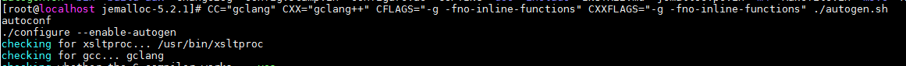
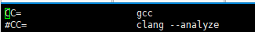
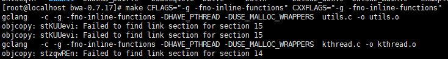
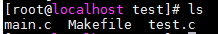
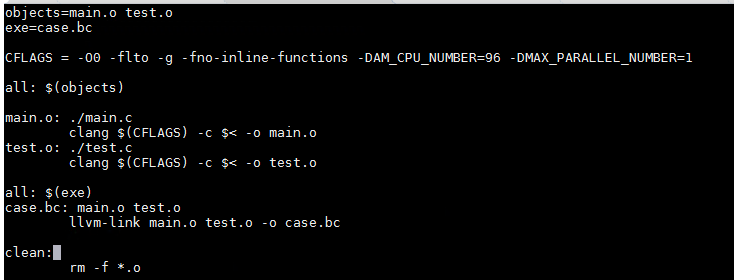
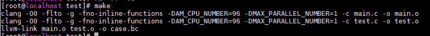

The tool checks for memory consistency problems when the source code is ported to the Kunpeng platform and provides suggestions on inserting memory barriers.

- The build command to upload the build file in the source package is executed during the task running. Ensure the security and integrity of the uploaded content to avoid affecting the normal operation of the server.
- During the memory consistency check, a large number of intermediate files will be generated. If you want to use this function, ensure enough drive space. Generally, about 100 GB drive space is required for every 100,000 lines of code.
- The intermediate file consumes a large amount of memory. Ensure that the available memory or swap space is sufficient. According to experience, about 6 GB memory is required for each 1 MB intermediate file.
- It is recommended the code to be checked not exceed 100,000 lines. The check of a large amount of source code consumes resources.
- If the check fails or the check result indicates that no modification is required, an empty report is generated.
Prerequisites
/opt/portadv is the default installation directory of the tool. The following uses this directory as an example. Replace it with the actual directory.
Procedure
- In the navigation pane on the left, select Enhanced Functions.
Select Memory Consistency as the check type, as shown in Figure 1.
- Select a check mode.
- For static check, continue with 3.
- For auto repair by the compiler, perform operations as prompted. For details, see Using the Auto Repair by Compiler.
The static check features low false positive ratio and a repair rate up to 60%. The auto repair by compiler does not miss any report and features a repair rate of 100%, but the false positive ratio is higher. Higher false positive ratio indicates more impact on performance. The repair rate varies depending on the software, and the impact on performance also varies.
- Select the upload type.
- To upload a source code file, continue with the steps from 4 to 7.
The static check tool uses the Clang compilation tool to build user projects and generate BC files as the input to the static check tool. Ensure that the uploaded code can be compiled using the Clang compilation tool.
- To upload a BC file, continue with the steps from 8 to 9.
- To upload a source code file, continue with the steps from 4 to 7.
- Set Source Code File Path. You can use either of the following methods to upload the source code file:
- Click Upload to upload the package or folder. The package will be automatically decompressed during the upload process.
- Only tar, tar.bz, tar.bz2, tar.gz, tar.xz, tbz, tbz2, tgz, txz, and zip packages can be uploaded. Only one package can be uploaded at a time. The size of the source code package should be less than or equal to 1 GB. The decompressed file size should be less than or equal to half of the remaining drive space.
- Only one folder can be uploaded at a time. The size of the folder must be less than or equal to half of the remaining drive space.
- Internet Explorer is incompatible with the folder upload function. You need to use other browsers, such as Google Chrome and Microsoft Edge, to upload folders.
- Manually upload the source code file to the specified path (for example, /opt/portadv/portadmin/weakconsistency/) on the server. Grant the read, write, and execute permissions to the porting user. Then, click the text box to select the source code file path from the drop-down list. You can also manually enter the source code file path.
- Click Upload to upload the package or folder. The package will be automatically decompressed during the upload process.
- Enter the compile command and click Next.
The BC file is generated after the compile command is parsed.
- Compile commands include make, cmake, configure, shell, and shell scripts. The make install command is not supported.
- The build command or build script cannot be used to create or modify directories or files that are not in the user space (/opt/portadv/user name/).
- If a BC file fails to be generated during the check, you can generate a BC file. Then perform steps from 8 to 9 and select BC File Upload to directly analyze the BC file and perform the memory consistency check.
- Select the generated BC file and click Check to start the memory consistency check.Figure 2 Selecting BC File

- If the source code is too large, you can download the generated BC file (multiple BC files can be downloaded at a time). Then, perform 8 to 9 to upload and analyze the BC file and check the memory consistency.
- If you need to generate the configuration file of the compiler tool, select Generating compiler tool configuration files.
After the check is complete, click View Report. The Check Report page is displayed, as shown in Figure 3.
- You can click
 to sort the source code files to be modified by path or number of recommended modifications.
to sort the source code files to be modified by path or number of recommended modifications. - If Generating compiler tool configuration files is selected, you can click Download compiler configuration files to download the file. You can also hover the mouse pointer over the of the target report in the Historical Reports area and select Download compiler configuration files.
- If the system displays a message indicating that the compiler configuration file is not the latest, click Go to download the file from the latest report. If the system displays a message indicating that the latest report does not contain the compiler configuration file, perform operations as prompted.
- Click View Suggested Source Code in the Operation column. The page shown in Figure 4 is displayed.

When editing the original code, save the modification in time. Otherwise, the modification may be lost due to session timeout.
- You can move the cursor to the code with a red wavy line and click Quick Fix in the floating message to apply the change automatically. You can also select Apply modifications of this class in this file to modify the same type of code in batches. You can modify the source code. After the modification, click Save, Undo, or Cancel in the upper right corner as required.
- After quick fix, the source code may fail to be compiled. Failed to Compile Source Code After a Quick Fix Upon a Memory Consistency Check in FAQs describes a commonly seen scenario.
- To download a source code file, select the file on the left and click the download icon.
- You can click the arrow keys in the upper right corner of Original Source Code to view the code.
- The tool supports concurrent running of multiple memory consistency checks.
- To cancel a task, click Close during the analysis process.
- Set the BC File Path. You can use either of the following methods to upload the BC file:
- Click Upload to upload the BC file.
- Manually upload the BC file to the specified path (for example, /opt/portadv/portadmin/weakconsistency_bc/) on the server. Then, click the text box to select the BC file from the drop-down list box. You can also manually enter the BC file name.
- Click Check to start the memory consistency check.After the check is complete, click View Report. The check report page is displayed, as shown in Figure 5.
The BC file check report displays the number of recommended modification points and the specific location of the code to be modified. You can check and modify the code based on the check report.
Using the Auto Repair by Compiler
The tool supports the following OSs and GCC versions:
OS |
GCC Version |
|---|---|
BC-Linux 7.6/7.7 |
GCC 4.8.5/4.9.3/5.1.0/5.2.0/5.3.0/5.4.0/5.5.0/6.1.0/6.2.0/6.3.0/6.4.0/6.5.0/7.1.0/7.2.0/7.3.0/7.4.0/8.1.0/8.2.0/8.3.0/9.1.0/9.2.0/9.3.0 |
CentOS 7.4/7.5/7.6/7.7 |
GCC 4.8.5/4.9.3/5.1.0/5.2.0/5.3.0/5.4.0/5.5.0/6.1.0/6.2.0/6.3.0/6.4.0/6.5.0/7.1.0/7.2.0/7.3.0/7.4.0/8.1.0/8.2.0/8.3.0/9.1.0/9.2.0/9.3.0 |
CentOS 8.0 |
GCC 8.2.0/8.3.0/9.1.0/9.2.0/9.3.0 |
CentOS 8.1/8.2 |
GCC 8.3.0/9.1.0/9.2.0/9.3.0 |
Debian 10 |
GCC 8.3.0/9.1.0/9.2.0/9.3.0 |
Deepin 15.2 |
GCC 6.3.0/6.4.0/6.5.0/7.1.0/7.2.0/7.3.0/7.4.0/8.1.0/8.2.0/8.3.0/9.1.0/9.2.0/9.3.0 |
iSoft 5.1 |
GCC 7.3.0/7.4.0/8.1.0/8.2.0/8.3.0/9.1.0/9.2.0/9.3.0 |
Kylin V10 SP1 |
GCC 7.3.0/7.4.0/8.1.0/8.2.0/8.3.0/9.1.0/9.2.0/9.3.0 |
LinxOS 6.0.90 |
GCC 6.3.0/6.4.0/6.5.0/7.1.0/7.2.0/7.3.0/7.4.0/8.1.0/8.2.0/8.3.0/9.1.0/9.2.0/9.3.0 |
NeoKylin V7U6 |
GCC 4.8.5/4.9.3/5.1.0/5.2.0/5.3.0/5.4.0/5.5.0/6.1.0/6.2.0/6.3.0/6.4.0/6.5.0/7.1.0/7.2.0/7.3.0/7.4.0/8.1.0/8.2.0/8.3.0/9.1.0/9.2.0/9.3.0 |
openEuler 20.03 |
GCC 7.3.0/7.4.0/8.1.0/8.2.0/8.3.0/9.1.0/9.2.0/9.3.0 |
openEuler 20.03 LTS SP1 |
GCC 7.3.0/7.4.0/8.1.0/8.2.0/8.3.0/9.1.0/9.2.0/9.3.0 |
openEuler 20.03 LTS SP2 |
GCC 7.3.0/7.4.0/8.1.0/8.2.0/8.3.0/9.1.0/9.2.0/9.3.0 |
SLES 15.1 |
GCC 7.4.0/8.1.0/8.2.0/8.3.0/9.1.0/9.2.0/9.3.0 |
Ubuntu 18.04.x |
GCC 7.3.0/7.4.0/8.1.0/8.2.0/8.3.0/9.1.0/9.2.0/9.3.0 |
Ubuntu 20.04.x |
GCC 9.3.0 |
UOS 20 SP1 |
GCC 8.3.0/9.1.0/9.2.0/9.3.0 |
uosEuler 20 |
GCC 7.3.0/7.4.0/8.1.0/8.2.0/8.3.0/9.1.0/9.2.0/9.3.0 |
- The GCC versions listed are the default GCC versions supported by the OSs. If the GCC version of the server has been upgraded, compatibility issues may occur.
- The supported GCC versions are official GCC branches. Do not use the GCC for openEuler versions.
Before using this function, you need to configure the environment as follows:
- Download software packages.
- GCC source code: https://gcc.gnu.org/ (Download the source code of the corresponding version from the official GCC website.)
- GCC repair tool patch: https://github.com/kunpengcompute/devkitdriver/tree/main/gccchecker (for Debian and RHEL OSs)
- Memory consistency repair component: Obtain /tools/weakconsistency/gccchecker/gcctool.tar.gz in the tool installation directory.
- Install the memory consistency repair component.
- Decompress the installation package.
1
tar xf gcctool.tar.gz
Check that the following files exist in the gcctool/bin directory:
gcctool, gcctool-bin, and libstdc++.so.6
- Decompress the installation package.
- Apply the GCC patch.
If "'patch' command not found" is displayed, run the following command to install the patch:
Debian OSs:
1
apt install patch
RHEL OSs:
1
yum install patch
1 2
cd /gcc/source/root/dir patch -p1 < /path/to/gcc/patch/file - Compile GCC.
For details about how to compile the GCC source code, see the official GCC documents. The patch does not affect the GCC dependency components and the compilation process. If you have any GCC compilation problem, see https://gcc.gnu.org/install/index.html.
After the environment is set up, perform the following steps to use the tool:
- Set the optimization level of the memory consistency repair component.
1
export HW_DEBUG=[ 0 | 1 | 2 ]
The compiling component supports configuration of the optimization level through environment variables. If the environment variables are not set, the repair component does not take effect.
- 0: Do not use any optimization policy. This setting results in the largest performance loss.
- 1: Use the most secure repair policy. This setting compromises the performance a lot.
- 2: Use component optimization rules. This setting helps minimize the performance loss.
- (Optional) Define the range of source code that can be automatically fixed.
- You can customize the source code repair range by file or function. After the allowlist is configured, the repair component repairs only the content in the list. The following is an allowlist format:
- The file list starts with files:. Each file occupies one line.
- The file path must be an absolute path.
- Only C, C++, and Fortran files are supported. Pure assembly files are not supported.
- The function list starts with functions:. Each function occupies one line.
- C/C++ common functions are supported. Templates or functions with the abi_tag attribute are not supported.
Allowlist example:
1 2 3 4 5 6 7 8 9 10 11 12 13
files: /path/to/file/a /path/to/./file/b /path/to/../file/c /path/to/file/d functions: func_a func_b() func_c(int xxx) int func_d() classA::func_e ns::classB::func_f() std::string nsA::nsB::classC::func_g(int xxx)
- The repair component obtains the path of the allowlist.
You can set environment variables to specify the path of the allowlist. The path is not specified by default.
export AUTOFIXLIST=/path/to/allowlist
- You can customize the source code repair range by file or function. After the allowlist is configured, the repair component repairs only the content in the list. The following is an allowlist format:
- Compile software.
The compilation process remains unchanged. (Remove the -pipe compilation option if it is used in the original compilation. This does not affect the original compilation result.)
Generating a BC File
Bitcode (BC) file is an intermediate file (IR) generated by compiling the source code using LLVM. The BC file is the binary representation of the IR.
BC files can be generated in either of the following ways:
- Method 1: (Recommended) Use the third-party tool gllvm to generate the BC file.
- The gllvm tool uses the Go programming language and the Clang compiler. Visit https://github.com/SRI-CSL/gllvm/blob/master/README.md to learn about how to use the tool. Version 1.2.9 is recommended.
- When using gllvm to build, use the gclang or gclang+ type compiler, and add the compilation option -g -fno-inline-functions.
Example:
Ensure that the current system environment meets the build requirements of the test program.
- Configure the Clang compiler and the compiled gllvm tool in the environment variables.
1 2
export PATH=/opt/portadv/tools/weakconsistency/staticcodeanalyzer/llvm-tools/bin:/path/to/gllvm/bin:$PATH export LD_LIBRARY_PATH=/home/porting/lib:$LD_LIBRARY_PATH
- Configure gllvm's dependency on Clang.
1 2 3
export LLVM_CC_NAME="clang" export LLVM_CXX_NAME="clang++" export LLVM_LINK_NAME="llvm-link"
- Optimization level: Change all optimization levels of the test project to -O0.
- Build: Specify gclang as the C compiler, gclang++ as the C++ compiler. Add the compilation option -g -fno-inline-functions. This operation varies according to the build tool and parameters of the test project. Other build steps remain unchanged. The following samples are provided for your reference:
- For a project built using scripts without specified input parameters, such as jemalloc, run the following command to specify the compiler type:Figure 6 jemalloc
 - For a project built using scripts with specified input parameters, such as incubator-brpc, run the following command to specify the compiler type based on incubator-brpc's parameter requirements:Figure 7 incubator-brpc

- For a project built using the configure command, such as sqlite, run the following command to specify the compiler type:Figure 8 sqlite

- If the compiler type is specified in the project configuration file and you need to change the configuration file, use the make build tool to set CC in the first line of the makefile to glang, and then run the build command. The following use bwa as an example.Figure 9 Modifying the makefile
Figure 10 bwa
 - Generate a BC file: After the build is complete, generate a dynamic library (.so file) or an executable file, and use the get-bc tool of gllvm to generate a BC file. The following uses jemalloc as an example.Figure 11 jemalloc

- For a project built using scripts without specified input parameters, such as jemalloc, run the following command to specify the compiler type:
- Method 2: Use the project building tool to generate BC files, such as Make and CMake. If the software uses this method, you need to modify the related configuration files, such as the makefile.
- Replacing compilation commands: Use Clang to replace GCC and llvm-link to replace LD.
- Adjusting the compilation options: Modify the optimization level to -O0 and add the compilation option -flto -g -fno-inline-functions.
After the preceding operations are complete, build the BC file.
Example:
- Before building a project, replace the GCC compiler with an LLVM related tool.
- During the building, replace or add specified compilation options to prevent the loss of some instruction information that affects the accuracy of analysis results.
- Change the generated target file to a BC file.
- Use the make tool to build a project.Figure 12 Building
 - Modify the compile command and replace the compilation options. The original makefile and the modified makefile are as follows:Figure 13 Original makefile
 Figure 14 Modified makefile
Figure 14 Modified makefile
In the modified makefile file, change the compilation tool to Clang, change the link of the target file generation tool to llvm-link.
- Complete the project building.Figure 15 Building completed

- An abnormal BC file may cause inaccurate analysis result.
- If the generated BC file is abnormal, it may be caused by compilers such as gfortran involved in the compilation process.
- You can use the LLC of the LLVM and the local GCC to convert the BC file into an executable program and check whether the program functions properly.